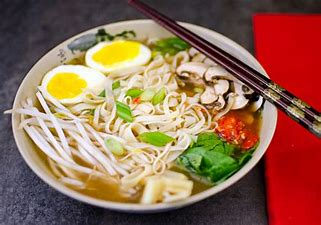
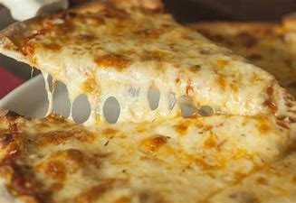

Eat healthy food & Enjoy your Drinks.
Welcome to maniac....
In 1962, sarvesh patil , a man not only with a passion for food but also a keen business sense started a small Eatery alongside Mumbai-Goa highway which served authentic mughlai dishes for travellers. He had an amazing
sense of flavours which is still prevalent in all of the recipes.
Our Food is prepared with AROMATIC SPICES in authentic cooking process which not only enhances the taste but also ensures the aroma to hit the senses. Be it biryanis, gravies, kapsa rice or chap rose, each recipe is a blend of our secret Indian flavors and spices simmered with love and warmth. Our cuisine is loved for its purity, taste cooked in traditional firewood kitchens; true in every mouthful to its royal origins.
Our Food is prepared with AROMATIC SPICES in authentic cooking process which not only enhances the taste but also ensures the aroma to hit the senses. Be it biryanis, gravies, kapsa rice or chap rose, each recipe is a blend of our secret Indian flavors and spices simmered with love and warmth. Our cuisine is loved for its purity, taste cooked in traditional firewood kitchens; true in every mouthful to its royal origins.

Restaurant Interior

Non AC Hall
Non-AC Banquet for Open Air functions and Events. Banquet for 500-700 People. Open Air Functions with Attached Rooms. Multiple Hill Top Lawns & Ac Banquets For Small & Large Events.

Central AC Hall
We have a large 20 x 25 room that can be reserved for special occasions like retirements, birthday parties, rehearsal dinners, etc. This room is separate from the main restaurant so there is plenty of privacy and minimal restaurant noise.
Missal pav
Price : 55.00/-
Misal pav is a popular Maharashtrian street food of usal (sprouts curry) topped with onions, tomatoes, farsan.

Dal bhat
Price : 150.00/-
Dal bhat is the ultimate vegetarian Nepalese dish. This is the basic meal for the country consisting of rice and lentils.
Pani puri
Price : 220.00/-
· Pani puri is an immensely popular Indian street food of crispy, hollow, fried dough balls (puri) stuffed with boiled potatoes
Pav Bhaji
Price : 90.00/-
A delicious and wholesome mix of veggies like potatoes, tomatoes, and capsicum cooked with onions, ginger and garlic
Sandwich
Price : 250.00/-
A sandwich is a food typically consisting of vegetables, sliced cheese or meat, placed on or between slices of bread
Shwarma
Price : 300.00/-
Shawarma is a popular Middle Eastern dish consisting of meat cut into thin slices, stacked in a cone-like shape
Noodles
Price : 270.00/-
Noodles are a type of food made from unleavened dough which is rolled flat and cut, stretched or extruded, into long strips .
Chinese soup
Price : 325.00/-
Chinese soups are enjoyed all over the world. Every country has soups with a heavy Chinese influence.

Manchurian
Price : 180.00/-
Veg Manchurian Dry is a crispy starter snack of fried veg balls tossed in the spicy, sweet, tangy manchurian sauce.

pizza
Price : 200.00/-
Pizza is a dish of Italian origin consisting of round, flat base of leavened wheat-based dough fille with veggies and cheese

Burger
Price : 155.00/-
A sandwich consisting of a bun, a cooked beef patty, and often other ingredients such as cheese, onion slices, lettuce, or condiments.

Lemon Tea
Price : 499.00/-
It is a simple beverage that will surely refresh you as soon as you take a sip.
mohito
Price : 99.00/-
The mojito is a favorite summer cocktail. The simple recipe of rum, lime, and mint is perfect for cooling down and relaxing with friends.